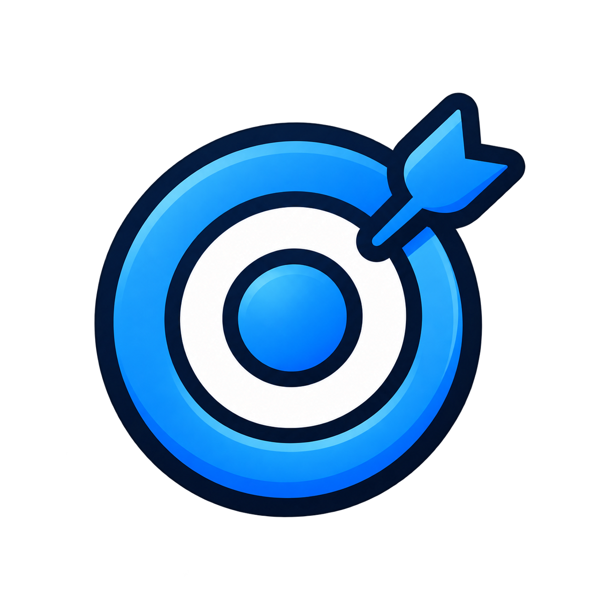
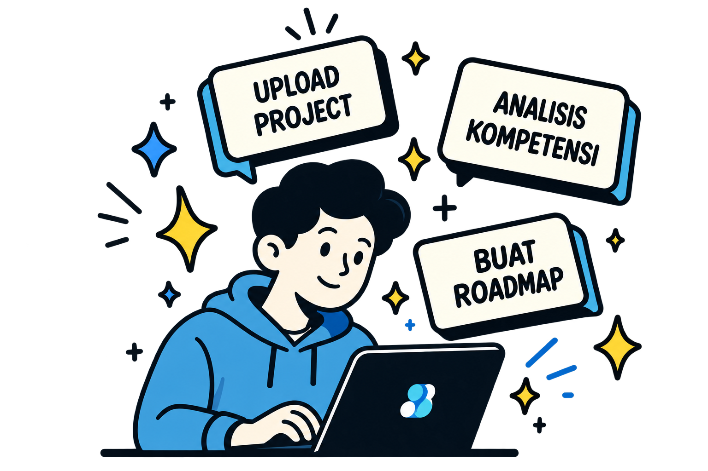
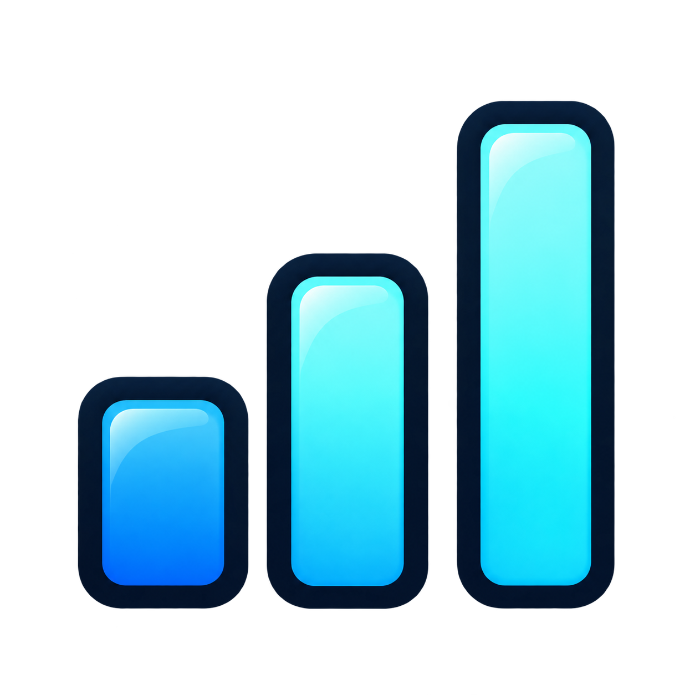
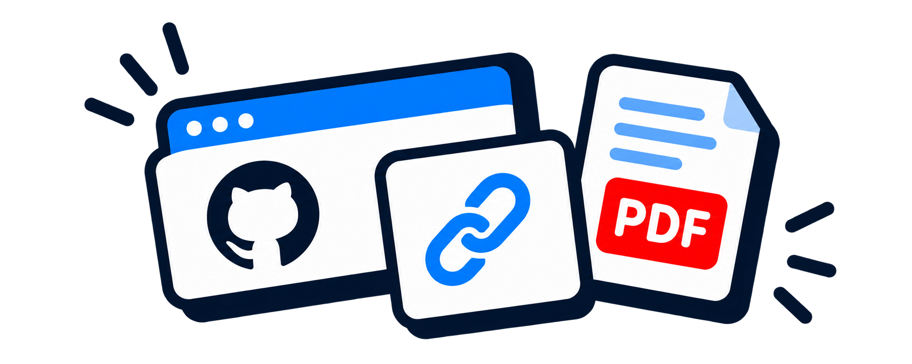
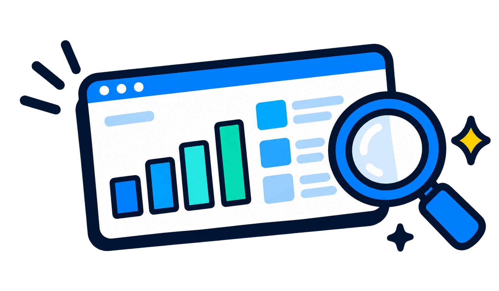
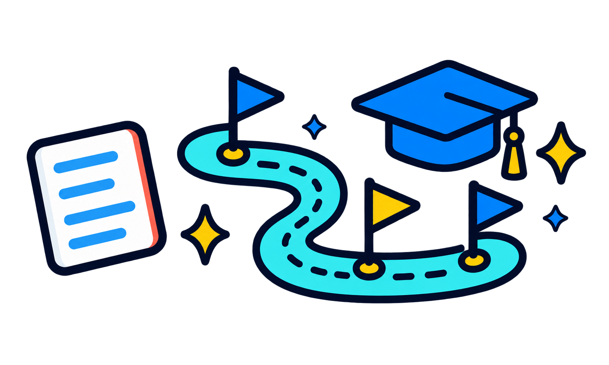
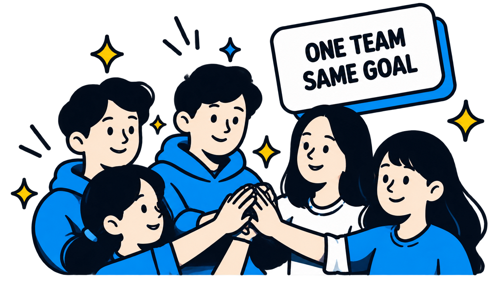
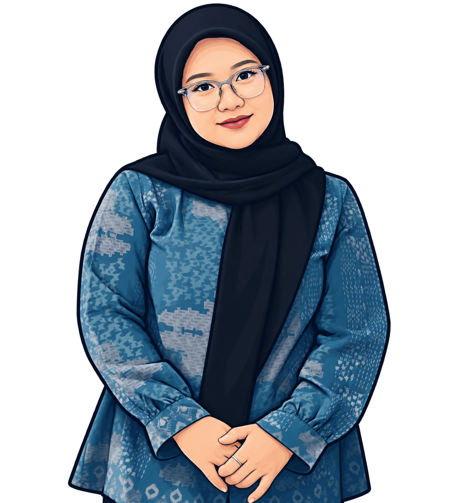

Berbasis Proyek Nyata
Analisis kompetensi dari hasil proyek dan pengalamanmu.
EVIDENCE–BASED SKILL GAP ANALYZER
Analisis kompetensi berdasarkan proyekmu dengan AI, temukan skill gap, dan dapatkan roadmap pembelajaran yang sesuai dengan target kariermu.

TENTANG BUKTIVA
Buktiva adalah platform AI yang membantu kamu menganalisis kompetensi dari proyek nyata, menemukan skill gap, dan mendapatkan roadmap pembelajaran yang sesuai dengan target kariermu.

Analisis kompetensi dari hasil proyek dan pengalamanmu.
AI menganalisis teknologi, peran, dan kontribusimu secara mendalam.

Skill gap dan progress disajikan secara jelas dan mudah dipahami.
Dirancang khusus untuk mahasiswa dan freshgraduate di berbagai industri.
CARA KERJA BUKTIVA
Buktiva membantumu menganalisis kompetensi, menemukan skill gap, dan mendapatkan roadmap pembelajaran dengan langkah yang sederhana.

Masukkan tautan GitHub, portofolio, deployment, atau unggah dokumen proyek yang pernah kamu kerjakan.
AI akan mengajukan pertanyaan spesifik terkait proyekmu untuk memastikan pemahaman yang lebih akurat.

Sistem membandingkan kompetensimu dengan kebutuhan target pekerjaan dan menampilkan skill gap yang perlu dikembangkan.

Terima rekomendasi pembelajaran yang disesuaikan dengan skill gap dan target kariermu.
TEAM KAMI
Kami adalah tim yang memiliki semangat yang sama untuk membantu mahasiswa dan fresh graduate menemukan potensi diri melalui teknologi dan analisis data.


Backend Developer
Mengembangkan sistem backend dan integrasi API untuk memastikan aplikasi berjalan dengan optimal.
Frontend Developer
Mengimplementasikan desain dan membangun tampilan utama website secara responsif.
Frontend Developer
Mengembangkan fitur interaktif dan halaman analisis agar mudah digunakan pengguna.

AI Engineer
Mengolah data pengguna dan mengembangkan proses ekstraksi serta identifikasi skill.
AI Engineer
Mengembangkan analisis skill gap dan rekomendasi berbasis teknologi AI.